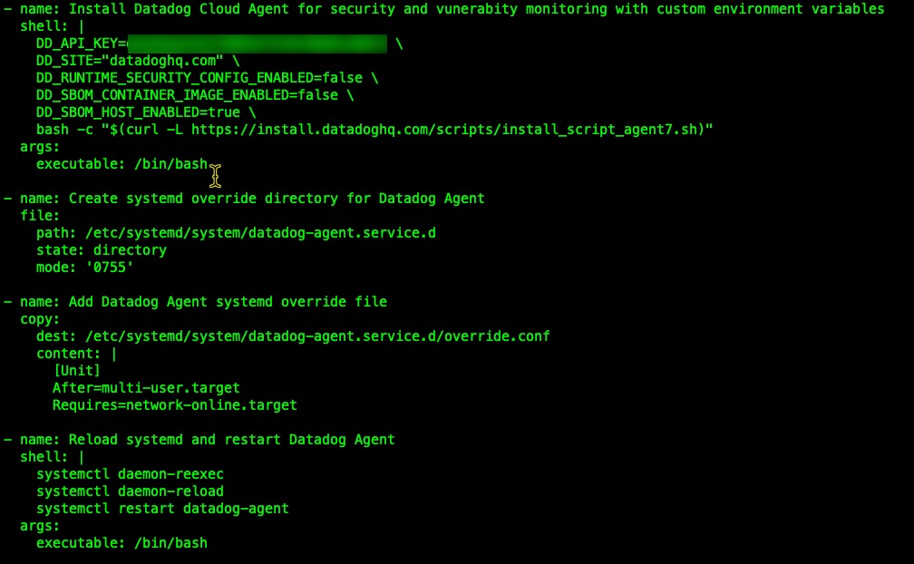
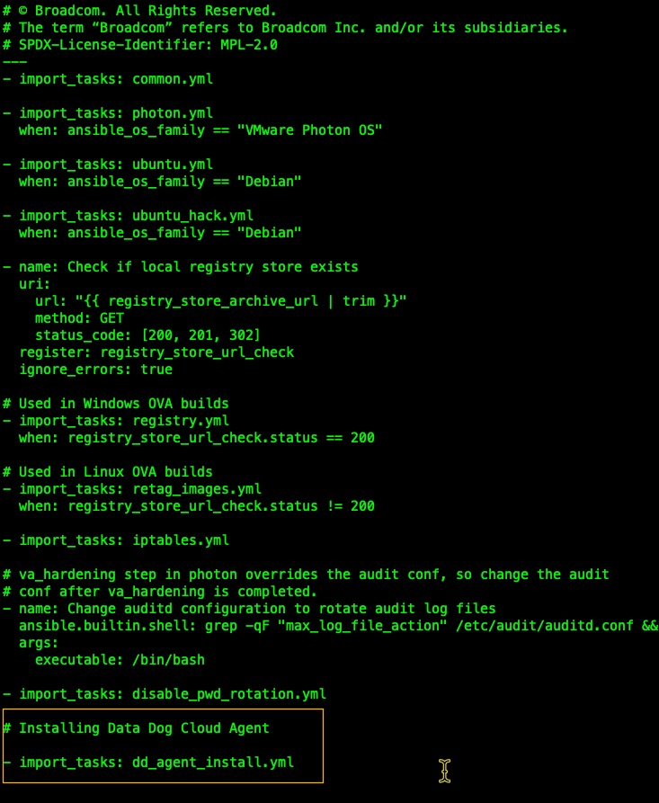
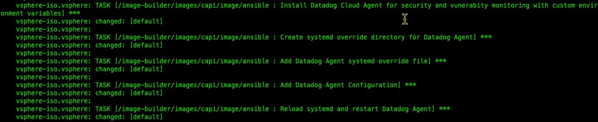
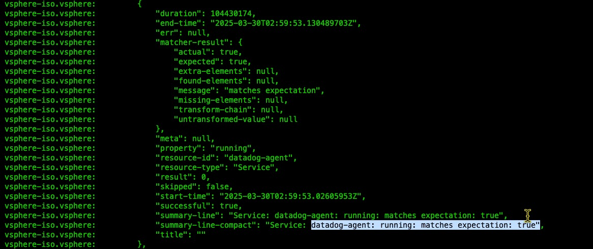
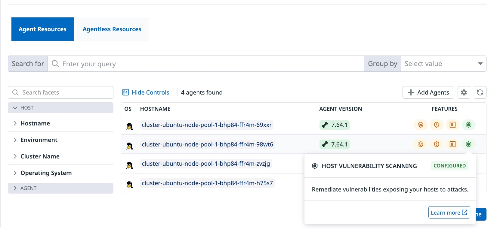

To monitor Kubernetes security, we typically deploy security monitoring through daemon sets. This daemon set can oversee both the Kubernetes nodes and their workloads. However, some use cases may necessitate a security or vulnerability agent to operate directly on the Kubernetes virtual machine node, and the security and compliance team wants to ensure that this operational policy is enforced across all cluster deployments. For this purpose, we will create a custom VKS node image (also known as Tanzu Kubernetes Release/TKR). This is achieved using the vSphere Tanzu Kubernetes Grid (TKG) Image Builder. The TKG Image Builder readme provides detailed foundational instructions, which we will follow to configure the Image Builder process.
We will set up a tailored node image featuring an embedded security agent to report potential vulnerabilities to a cloud service that offers a central dashboard. This customized node image will be accessible to the vSphere namespaces designated for cluster creation via the assigned content library. This ensures our security and compliance team can verify that each cluster node is instrumented and configurable for detecting vulnerabilities.
Before you start
It is good practice to list the prerequisites that are required or recommended.
Make sure that you have the following:
Internet connectivity – Required to pull the operating system ISO.
Linux or Mac OS-based workstation with Docker installed.
DHCP Service – Assigns IP address to VM during the build process.
vSphere Cluster or Host – Build Cluster or host for automated node image build.
In this example, I will configure the DataDog Cloud Security Agent to instrument a VKS node image. This procedure can also be used to deploy any node image agent. Here are the steps:
vSphere TKG Image Builder Cloning: Clone the vSphere Tanzu Kubernetes Grid Image Builder to your workstation with Docker and prerequisites defined by TKG Builder.
Configuring Image Builder: Set up your vSphere cluster or host in the Packer parameter file vsphere.j2. The included vsphere.js file will be a vSphere template to configure your target vSphere environment. (Tip: Host)
Optional Step: Configuring the vsphere.j2 file is the minimum requirement for a functional image builder environment. If this is your first image-build project, you can confirm proper workstation configuration by creating a base image before moving on to a customized build. If this test build is successful, we can then create our customized node image. For details and video demonstration, see: Building Images
Node Image Customization: Our image customization will take place during the Ansible stage of the image build process. As part of an Ansible task, we will incorporate the agent installation steps into the build process. Ansible tasks are defined in the directory [base]/vsphere-tanzu-kubernetes-grid-image-builder-main/ansible/task. Here, we create a simple installation script to install my example DD agent on my VM instance, which will serve as the template for my customized node image. For this Ansible task, I’m translating the agent installation script-based steps into an Ansible task. I have named the task YAML dd_agent_install.yml. 
I must also add this task to the Ansible main.yml located in the same Ansible task directory. 
Customization Validation/Testing: We have customized our node image build by adding an embedded cloud security agent installation. We should now verify the successful deployment of the agent. The GOSS testing module of the TKG Image Builder conducts this step. In our scenario, the agent is a systemd-managed process. Therefore, my fundamental GOSS test will confirm that the DD agent’s status is running. GOSS test configurations are located in the following directory: [base]/vsphere-tanzu-kubernetes-grid-image-builder-main/goss. I’ve named my GOSS YAML configuration goss-datadog-agent.yaml.
Deploying a Worker Cluster with Custom Node Image: After a successful node image build, the custom node image is downloaded to our build workstation as an OVA into the directory specified in the build command, identified by a specified image suffix. We then upload this image to our TKGR content library. A successful upload is confirmed using the kubectl get tkr command in the vSphere namespace context, and we specify the custom node image in a VKS cluster manifest Managing Cluster Nodes: A successful custom node cluster should register itself with the central management system.
Monitoring the build process I note the Cloud Security Agent is deployed. 
The GOSS systemd test confirms the Cloud Security Agent service is runnings, indicating it will start when the node image is deployed. 
With a cluster deployed using my custom instrumented node image, I logged into the Datadog portal. The cluster nodes have successfully registered with the Cloud Security portal and the hosts are now monitored for policy-based vulnerabilities. 